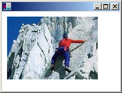

You can use the Image class to load and display raster images (bitmaps) and vector images (metafiles). To display an image, you need a Graphics object and an Image object. The Graphics object provides the Graphics::DrawImage method, which receives the address of the Image object as an argument.
The following example constructs an Image object from the file Climber.jpg and then displays the image. The destination point for the upper-left corner of the image, (10, 10), is specified in the second and third parameters of the Graphics::DrawImage method.
Image myImage(L"Climber.jpg");
myGraphics.DrawImage(&myImage, 10, 10);
The preceding code, along with a particular file, Climber.jpg, produced the following output.

You can construct Image objects from a variety of graphics file formats: BMP, GIF, JPEG, Exif, PNG, TIFF, WMF, EMF, and ICON.
The following example constructs Image objects from a variety of file types and then displays the images.
Image myBMP(L"SpaceCadet.bmp");
Image myEMF(L"Metafile1.emf");
Image myGIF(L"Soda.gif");
Image myJPEG(L"Mango.jpg");
Image myPNG(L"Flowers.png");
Image myTIFF(L"MS.tif");
myGraphics.DrawImage(&myBMP, 10, 10);
myGraphics.DrawImage(&myEMF, 220, 10);
myGraphics.DrawImage(&myGIF, 320, 10);
myGraphics.DrawImage(&myJPEG, 380, 10);
myGraphics.DrawImage(&myPNG, 150, 200);
myGraphics.DrawImage(&myTIFF, 300, 200);
The Image class provides a Image::Clone method that you can use to make a copy of an existing Image, Metafile, or Bitmap object. The Clone method is overloaded in the Bitmap class, and one of the variations has a source-rectangle parameter that you can use to specify the portion of the original image that you want to copy. The following example creates a Bitmap object by cloning the top half of an existing Bitmap object. Then both images are displayed.
Bitmap* originalBitmap = new Bitmap(L"Spiral.png");
RectF sourceRect(
0.0f,
0.0f,
(REAL)(originalBitmap->GetWidth()),
(REAL)(originalBitmap->GetHeight())/2.0f);
Bitmap* secondBitmap = originalBitmap->Clone(sourceRect, PixelFormatDontCare);
myGraphics.DrawImage(originalBitmap, 10, 10);
myGraphics.DrawImage(secondBitmap, 100, 10);
The preceding code, along with a particular file, Spiral.png, produced the following output.
Â
Â